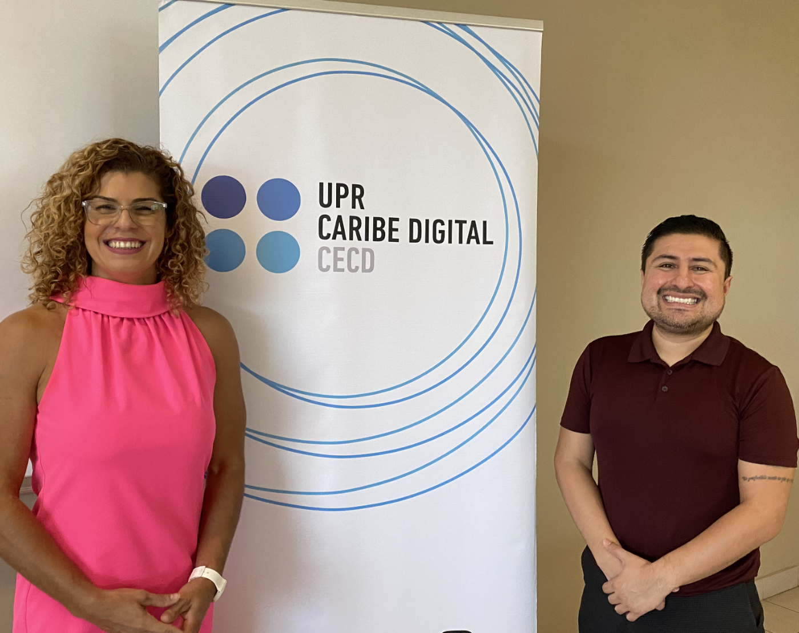
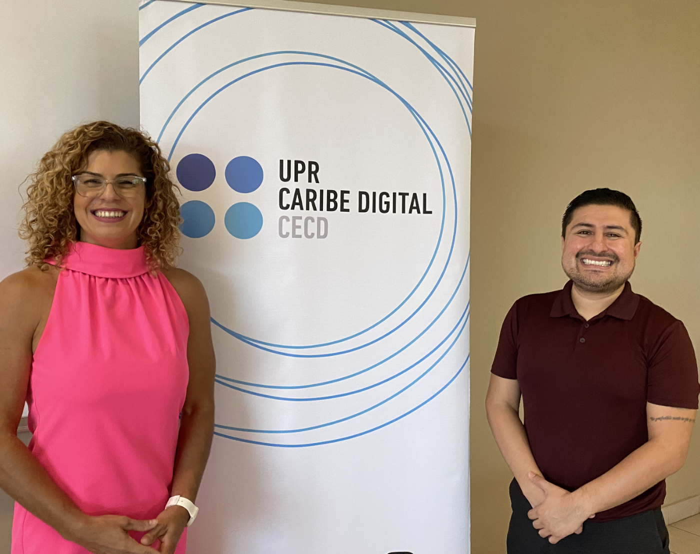

"¿Por qué unas periodistas en Venezuela sacan un medio independiente? Porque se instaló un sistema de censura, de supresión de garantías de derechos a la libertad de expresión, de persecución".

Ángel Nakamura is a journalist with an 18-year career in breaking news coverage in Mexico. He is a graduate of the Universidad Iberoamericana and the Universidad Autónoma de Tamaulipas. Nakamura's work focuses on impactful and current affairs, dealing with topics such as organized crime, politics, human rights, and the Mexican judicial system. The journalist explores new formats that resonate with social media users, as he believes in the need for constant innovation in journalism. He also has dynamic approaches to his practice, in response to the ever-changing landscape of media consumption.
In his homeland, Nakamura worked in radio, television, and online platforms. He has worked for Mexican media such as El Diario de Ciudad Victoria, where he was a reporter; Noticias de Tamaulipas, where he was a correspondent; and El Financiero/Bloomberg, where he was web editor. Since 2020, he has been a copyeditor for CNN en Español, which has been his platform for continuous growth and learning.
From 2023 to 2024, he was selected as a scholar for the Mellon Fellowship for High Impact Scholars, Artists, and Journalists, a project at the University of Texas that makes this digital repository possible. The fellowship recognized Nakamura's outstanding contributions to multimedia journalism. As part of the fellowship, the journalist participated in community activities, intellectual debates, and artistic endeavors.
Watch the Talk with Luz Mely Reyes
at the University of Puerto Rico
Photo Gallery


 
